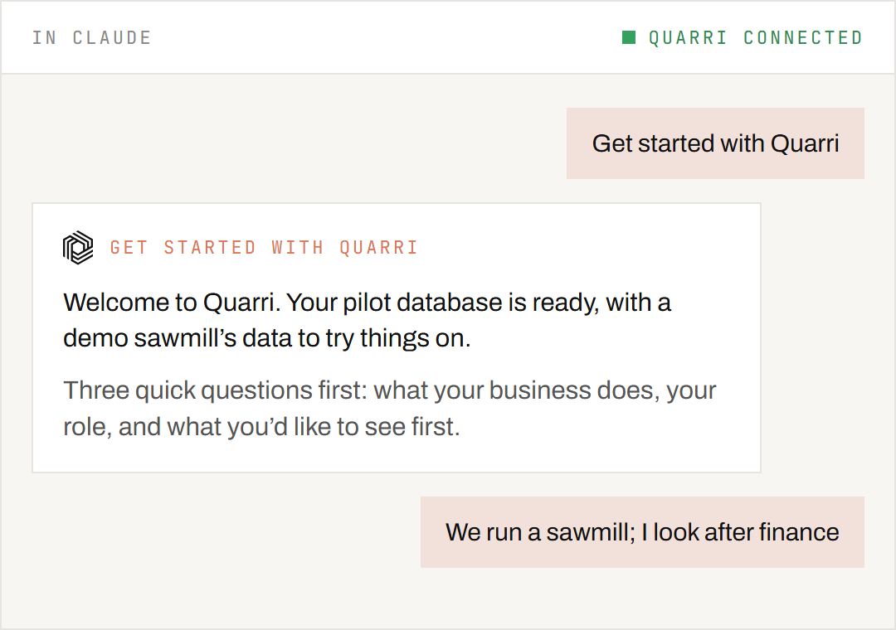
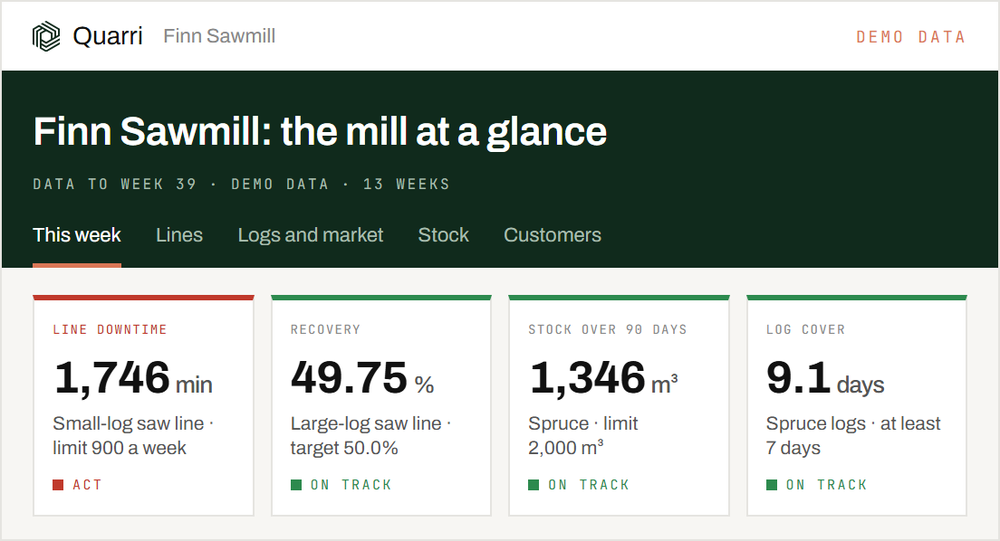
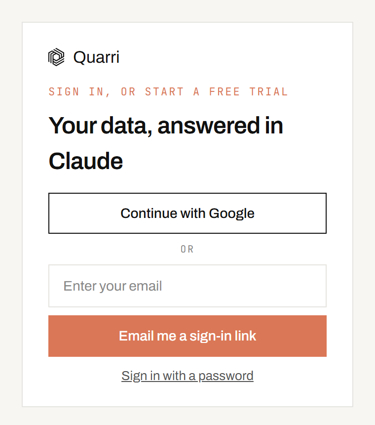
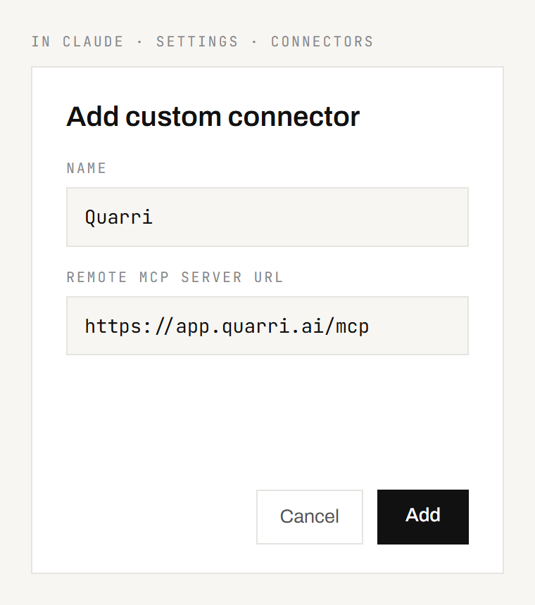
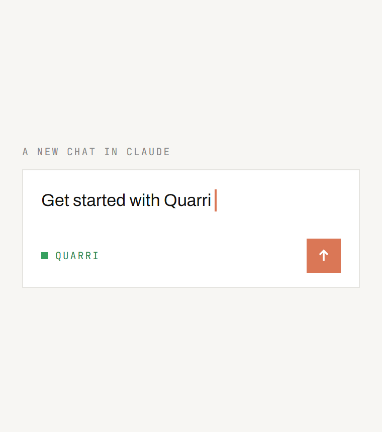
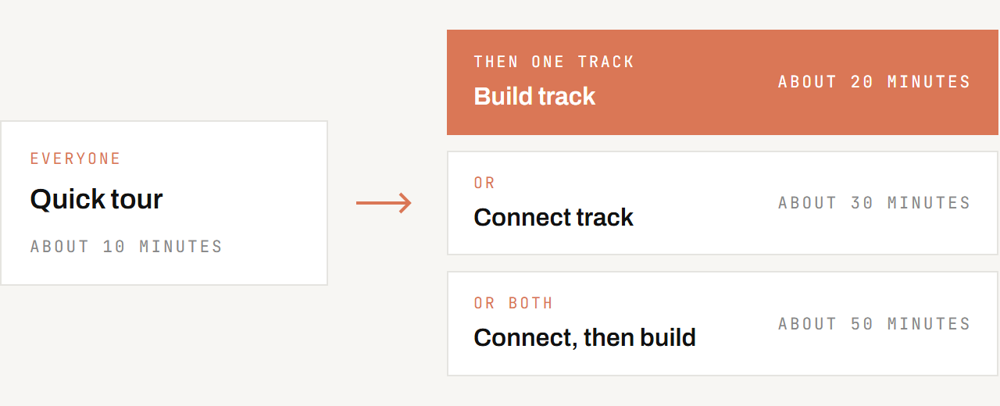
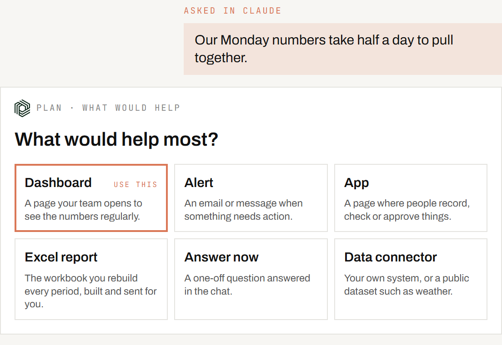

Quarri, in the Claude you already use
Sign up, add Quarri to Claude, then ask. Quarri checks what is set up and guides the next step.
Quarri never trains models on your data · Your own isolated, encrypted database · Hosted in the US by default · EU hosting available

Your data is safe
More on our security page.
What Quarri is
Quarri keeps a company's operational data in one place, organised so that questions about it get the same answer every time. It is built for forestry, lumber, wood products and paper converting. People use it through Claude: they ask questions, build dashboards and small apps, and set up alerts and scheduled emails, all by asking. Each company has its own workspace.
First time? Read on from First time: before you start. Used Quarri before? Skip to Coming back: things to say.

First time: before you start


https://app.quarri.ai/mcp. Sign in when asked.- Claude Desktop: add it on the web as above, then fully quit and reopen the desktop app. You can also add it inside the desktop app under Customize, Connectors, Add, Custom connector.
- Team or Enterprise plan: an owner adds Quarri once under Organization settings, Connectors. Each member then connects it with their own Quarri sign-in.
- Claude Code:
claude mcp add --transport http quarri https://app.quarri.ai/mcp

First time: the tour and the tracks
Quarri asks three quick questions about your business, your role and what you want first, then suggests a route:
| Step | What it is | Time |
|---|---|---|
| Quick tour (everyone) | How Quarri works, in short cards, and your own questions answered on the ready-made data | about 10 minutes |
| Build track | A dashboard with its alert, an order desk and an Excel report, already built on a demo sawmill's data: you go through each builder's questions, with the demo's answers set, and see what each one does | about 20 minutes |
| Connect track | A running connector explained, its data modelled by Quarri's onboarding agent, and one of your terms taught to Quarri | about 30 minutes |
| Connect, then build | The Connect track, then the Build track | about 50 minutes |
Nothing is saved in the tour or the Build track. In the Connect track nothing goes live until you agree, you can stop at any point, and at the end you choose what to keep.

Coming back: things to say
Where the skills are. The tour and its two tracks run in free and pilot workspaces, on a demo sawmill's data. Building on your own data starts with Help me plan something specific in your company's own workspace.
| Say | What it does |
|---|---|
| Get started with Quarri | Shows where you are and the next step |
| Help me plan something specific | Works out what to build with you, then starts the builder that makes it |
| Change my <page> | Changes something you already have, with the smallest change that works, and nothing else moves |
| Build a data connector | Gets data in, from a public dataset or one of your systems with a web API (the free tier includes one) |
| Model my data | Turns what arrived into tables that answer questions |
| Start the quick tour | The 10-minute tour of how Quarri works |
| Start the Build track | Build a dashboard and its alert, an order desk and an Excel report on a demo sawmill |
| Start the Connect track | See how a connector brings data in and how it is modelled |
| Build a dashboard | A page your team opens to see the numbers regularly, built in Claude Code |
| Build an app | A page where people record, check or approve things, built in Claude Code |
| Email me if a price moves more than 5% | An alert, checked on a schedule |
| Send me the dashboard every Monday at 8 | A scheduled email |
| Email me a price report every month | An Excel report, built by Quarri and emailed |
| Export last month's deliveries to Excel | A one-off workbook of the rows you ask for, saved to your folder or emailed to you |
| Update Quarri context: ... | Tells Quarri what your data means, once, for every answer after |
| Ask the Quarri team | Sends a request to a person at Quarri |

Getting the most from your Claude plan
- Ask and explore in the chat. Questions, summaries and small changes cost little.
- Ask for the change, not the page. "Show the last 12 months" is a small change Claude makes to its copy of the page in Claude Code; it never needs to read the whole page into the chat.
- Build in Claude Code. Asking questions is fine anywhere; building dashboards, apps and connectors is code, and Claude Code works on a copy on your computer and uploads it in one step. In the chat the whole page travels through the conversation, which uses up your plan quickly.
- Say what you want before Claude builds. The names your team uses, the tabs, the date range. Changing them afterwards costs more than getting them right first.
- If something fails twice, stop and ask Claude why before trying again. Repeating a failing step repeats its cost. If Quarri can't do it yet, ask the Quarri team.
When you need us
A few things, such as connecting an on-premise database or scanned documents, need the Quarri team. Say Ask the Quarri team and Claude sends the request for you.
Quarri, in the Claude you already use
Sign up, add Quarri to Claude, then ask. Quarri checks what is set up and guides the next step.
Questions: ask Claude to Ask the Quarri team, or email theo@quarri.ai.